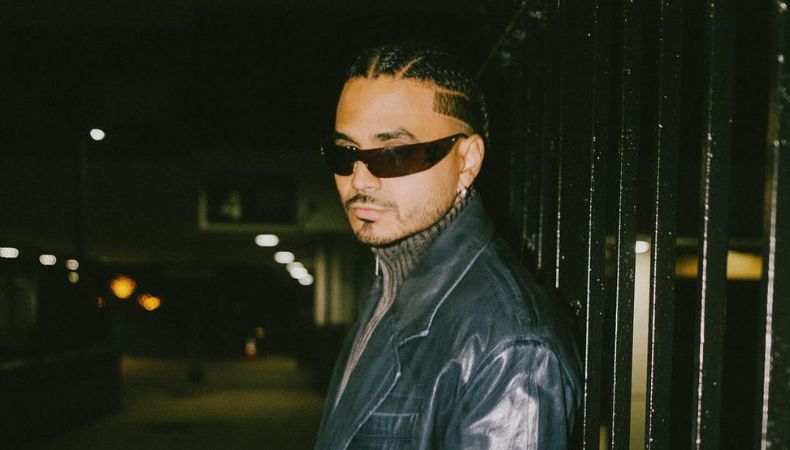

Bad Bunny

Bad Bunny es uno de los artistas más influyentes del reggaeton y la música urbana moderna.
Álbum representativo: Un Verano Sin Ti
Esta página muestra algunos de mis músicos y bandas favoritas.

Álvaro Díaz es un artista puertorriqueño reconocido por su estilo alternativo dentro del rap y la música urbana.
Álbum representativo: Felicilandia
Bad Bunny es uno de los artistas más influyentes del reggaeton y la música urbana moderna.
Álbum representativo: Un Verano Sin Ti
Guns N' Roses es una banda estadounidense de hard rock formada en 1985 y conocida por su energía y estilo rebelde.
Álbum representativo: Appetite for Destruction

Latin Mafia es un grupo musical que mezcla sonidos alternativos, indie y urbanos con una estética moderna.
Álbum representativo: Todos los días todo el día

Queen es una de las bandas de rock más influyentes de la historia, con un estilo único liderado por Freddie Mercury.
Álbum representativo: A Night at the Opera

NSQK es un artista innovador en la escena musical actual, conocido por su estilo único y su creatividad dentro de la música urbana.
Álbum representativo: Proyecto NSQK